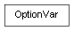

class cymel.utils.optionvar.OptionVar¶

-
class
cymel.utils.optionvar.OptionVar(prefix='', defaults={})¶ ベースクラス:
objectoptionVar ラッパークラス。
dictのような振る舞いをする。特別な対応をせずに、以下のタイプの値を扱うことができる。
None(文字列 '___None___' として保存される)bool(文字列 '___True___' か '___False___' として保存される）intfloatstrintシーケンス（型の混在は不可）floatシーケンス（型の混在は不可）strシーケンス（型の混在は不可）- 空のシーケンス
さらに、
setTranslatorで optionVar に セットする値との変換器をセットすることで、 あらゆるタイプの値を扱えるようにすることも可能。任意の接頭辞を指定することで、 optionVar の保存と読み出し時に 接頭辞が付加されるとともに、 辞書として扱われる範囲を限定することができる。
また、各値のデフォルト値を指定することも可能。 デフォルト値が指定されていれば、 実際に値が保存されていなくても値を持つようになり、 optionVar の肥大化が抑制される。
注釈
ツールなどの開発時は、 そのツール固有の接頭辞を指定し、 一通りのデフォルト値を指定することで、 そのツールのオプション辞書とする使い方を推奨する。
初期化。
パラメータ: Methods:
__init__([prefix, defaults])初期化。 clear()全ての値とデフォルト値を削除する。 defaultItems()デフォルト値を持つキーとその値のペアのリストを得る。 defaultKeys()デフォルト値を持つキーのリストを得る。 defaultValues()デフォルト値のリストを得る。 get(key[, default])キーを指定して値を得る。 getDefault(key)デフォルト値を得る。 hasDefault(key)デフォルト値を持つキーかどうか。 hasNonDefaultValue(key)デフォルト値ではない値が保存されているかどうか。 has_key(key)items()セットされているキーと値のペアのリストを得る。 keys()セットされているキーのリストを得る。 nonDefaultItems()デフォルトでない（実際に保存されている）キーと値のペアのリストを得る。 nonDefaultKeys()デフォルトでない（実際に保存されている）キーのリストを得る。 nonDefaultValues()デフォルトでない（実際に保存されている）値のリストを得る。 pop(key, *args)値を取得して削除する。 prefix()接頭辞を得る。 removeDefault(key)デフォルト値を削除する。 reset(key)指定したキーの値をリセットする。 resetAll([ignores])全ての値をリセットする。 resetToDefaults([ignores])デフォルト値を持つ全ての値をリセットする。 setDefault(key, val)キーに対するデフォルト値をセットする。 setDefaults(dic)辞書によってデフォルト値をまとめて登録する。 setTranslator(key[, getter_setter])optionVar に保存する値と実際の値の変換器をセットする。 update(src)指定した辞書で値を書き換える。 values()セットされている値のリストを得る。 Methods Details:
-
__init__(prefix='', defaults={})¶ 初期化。
パラメータ:
-
clear()¶ 全ての値とデフォルト値を削除する。
-
get(key, default=None)¶ キーを指定して値を得る。
パラメータ: key -- キー。 戻り値: 格納されている値かデフォルト値、又は指定値。
-
has_key(key)¶
-
pop(key, *args)¶ 値を取得して削除する。
デフォルト値がセットされたキーの場合は、 デフォルト値も削除される。
パラメータ: key -- キー。 戻り値: 格納されていた値かデフォルト値、又は指定値。
-
removeDefault(key)¶ デフォルト値を削除する。
現在の値がデフォルト値の場合、 デフォルト値の削除後も現在の値を保持するために、 optionVar の書き込みが行われる。
もし、完全に削除したい場合は、本メソッドではなく、 del や
popを使用すべきである。パラメータ: key (str) -- キー。
-
resetAll(ignores=None)¶ 全ての値をリセットする。
デフォルト値があればその値に、 無ければ値が無い状態になる。
接頭辞が未設定の場合は、Mayaの全ての値を削除することになるので、 認められない操作であるとしてエラーになる。
パラメータ: ignores (iterable) -- 除外するキーのリストやセット。
-
resetToDefaults(ignores=None)¶ デフォルト値を持つ全ての値をリセットする。
パラメータ: ignores (iterable) -- 除外するキーのリストやセット。